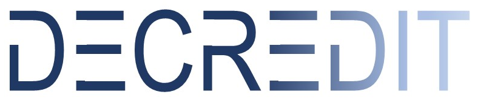

Decredit מלווה יצואנים, בנקים ומוסדות מלווים ישראלים בבניית פתרונות ביטוח סיכונים פוליטיים ואשראי מובנה לעסקאות בשווקים מתעוררים — בגישה אישית ובמעל 25 שנות ניסיון בתחום.
Decredit הוא גוף ייעוץ וגישור ביטוחי עצמאי, המתמחה בביטוח סיכונים פוליטיים ואשראי מובנה לעסקאות ארוכות טווח. אנו פועלים לצד רשת ברוקרים בינלאומית מבוססת לונדון, המעניקה גישה לשוקי ביטוח מובילים בעולם — ומתרגמים את המורכבות הזו לפתרון פשוט וממוקד עבור הלקוח הישראלי: יצואן, בנק או גוף מלווה הפועל בשוק זר.
אנחנו מכירים את השטח: פרויקטי תשתית ואנרגיה, חקלאות וטכנולוגיה חקלאית, ומימון פרויקטים במדינות מתפתחות — ויודעים היכן טמון הסיכון האמיתי מול הסיכון שרק נראה כזה.
הגנה על נכסים, חוזים ותזרים מזומנים מפני פעולות ממשלתיות והפרות חוזה במדינות בהן אתם פועלים או מלווים.
פתרונות ביטוחיים המותאמים למבנה המימון של העסקה — עבור בנקים, גופים מלווים ויצואנים המבקשים להפחית את חשיפת האשראי שלהם בעסקאות ארוכות טווח מול לקוחות וממשלות בחו"ל.
אנחנו לא כבולים למבטח יחיד — הבחירה בפתרון נעשית לפי האינטרס של הלקוח, לא לפי מכסת מכירות.
שיתוף פעולה עם רשת ברוקרים מלונדון פותח גישה לשוקי ביטוח וחיתום מובילים, שאינם זמינים ישירות ללקוח בישראל.
מהבנת הצורך והמיפוי הראשוני, דרך משא ומתן מול חתמים, ועד לניהול הפוליסה וטיפול בתביעה — ליווי אחד רציף.
שלחו הודעה קצרה על העסקה או התיק שברצונכם להגן עליו — נחזור אליכם באותו יום עסקים.